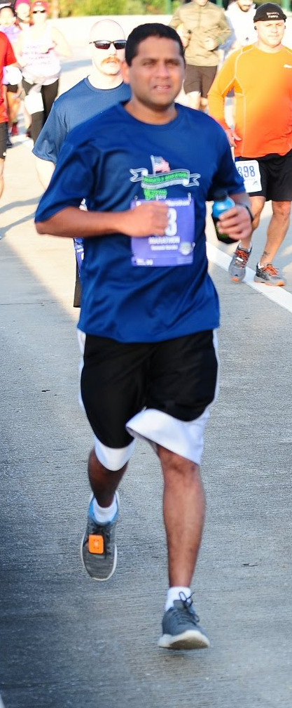

About me

I am born in India, moved to US at the age of 21 and became US citizen few years ago. I attained double masters in Computer Science and Business Administration. Earlier in my career I worked as a IT consultant in different locations all around United States. I Joined GE in 2011 in Michigan right after finishing my MBA program. My interests are playing tennis, running and traveling with family. I currently live in Woodstock with my wife Nena and two daughters, Sarasvi (9) and Lakshmi (6).